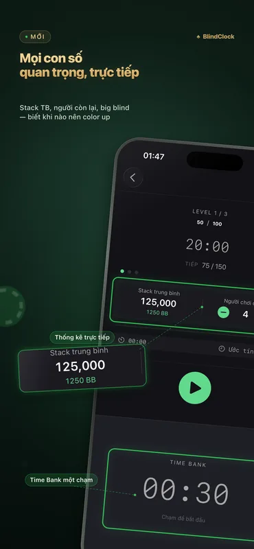
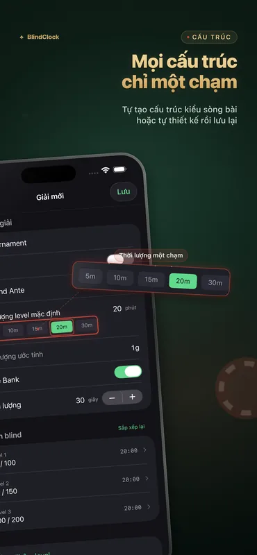
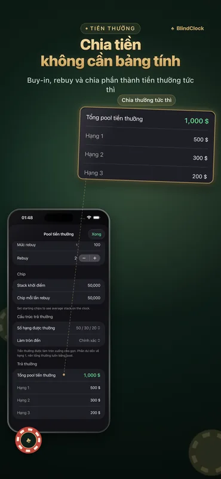

Tất cả những gì một người chủ trì cần
Làm cho ván chơi tại nhà và giải đấu câu lạc bộ. Chính xác cả khi tắt màn hình, đọc rõ từ đầu kia bàn.
Đồng hồ giải đấu chính xác
Tạm dừng, chạy tiếp hoặc bỏ qua mức. Đồng hồ vẫn giữ đúng giờ khi chạy nền và sau khi tắt cưỡng bức, rồi chạy tiếp từ chỗ đang dừng.
Trình tạo cấu trúc mức mù
Nhập số người chơi, số chip và thời lượng mong muốn. Bạn nhận được một cấu trúc kiểu casino kèm giờ nghỉ.
Máy tính chia thưởng
Buy-in, rebuy và cách chia giải được tính ngay tại chỗ. Cuối buổi không cần bảng tính.
Time bank
Cho người chơi thêm thời gian ra quyết định với time bank tùy chỉnh, có cảnh báo và âm thanh.
Live Activity & Dynamic Island
Mức hiện tại hiển thị trên Màn hình khóa và trong Dynamic Island. Khi iPhone đang sạc, StandBy hiển thị đồng hồ giải đấu toàn màn hình.
Chế độ hiển thị bàn chơi trên iPad
Xoay iPad sang ngang để có bộ đếm ngược cỡ lớn với mức mù ở hai bên. Cả bàn đều đọc được, và màn hình luôn sáng.
Chia sẻ mẫu giải đấu
Xuất bất kỳ giải đấu nào thành tệp .blindclock rồi AirDrop cho bạn bè. Họ nhập đúng cấu trúc đó chỉ với một chạm.
Đồng bộ iCloud
Các mẫu giải đấu của bạn đồng bộ giữa iPhone và iPad. Miễn phí cho mọi người.
Chế độ màn hình lớn
Kết nối TV hoặc máy chiếu, màn hình lớn sẽ hiển thị đồng hồ giải đấu. Thiết bị của bạn làm điều khiển từ xa. Tính năng của BlindClock Pro.
Chủ đề đồng hồ và thương hiệu
Bảy chủ đề, từ Nửa đêm đến Ban ngày, đổi màu toàn bộ ứng dụng. Tên phòng và logo của bạn hiển thị trên màn hình lớn. Xem trước miễn phí, áp dụng với Pro.
Đếm chip và tính sổ
Đếm stack theo mệnh giá, lưu bộ chip của bạn, và kiểm tra tổng chip có khớp trước khi có ai rời bàn. Tính năng của BlindClock Pro.
Xem ứng dụng hoạt động



Ví dụ cấu trúc mức mù
Một cấu trúc gọn gàng trông thế này: turbo chạy khoảng 1,5 giờ, ván tại nhà tiêu chuẩn khoảng 3 giờ, deep stack từ 4,5 giờ trở lên. Trình tạo của BlindClock dựng cấu trúc theo số người chơi, số chip và thời lượng mục tiêu của bạn.
| Cấp | Turbo · 15 phút | Tiêu chuẩn · 20 phút | Deep stack · 30 phút |
|---|---|---|---|
| 1 | 25 / 50 | 25 / 50 | 25 / 50 |
| 2 | 50 / 100 | 50 / 100 | 50 / 100 |
| 3 | 100 / 200 | 75 / 150 | 75 / 150 |
| 4 | 200 / 400 | 100 / 200 | 100 / 200 |
| 5 | 300 / 600 | 150 / 300 | 150 / 300 |
| 6 | 500 / 1000 | 200 / 400 | 200 / 400 |
| 7 | — | 300 / 600 | 250 / 500 |
| 8 | — | 400 / 800 | 300 / 600 |
| 9 | — | 500 / 1000 | 400 / 800 |
| Chip khởi điểm | 5,000 | 5,000 | 10,000 |
Mức mù ghi theo small blind / big blind. Thêm 10 phút nghỉ sau mỗi bốn đến năm cấp. Trình tạo của BlindClock tự sắp xếp giờ nghỉ cho bạn.
Hướng dẫn đầy đủ (tiếng Anh): cách tổ chức giải poker tại nhà →
Có gì mới trong 2.5
- Chủ đề đồng hồ và thương hiệu (Pro) — 7 chủ đề (gồm Ban ngày, chủ đề sáng đầu tiên) đổi màu toàn bộ ứng dụng. Thêm tên phòng và logo của bạn lên màn hình lớn, và xem trước mọi chủ đề miễn phí.
- Trợ lý tính sổ (Pro) — đếm stack của từng người chơi theo mệnh giá, lưu bộ chip của bạn, và BlindClock kiểm tra tổng chip đã nhập có khớp với chip trên bàn hay không trước khi ai đó rời bàn.
- Hoàn thiện và sửa lỗi — bàn phím số trên iPad đã đọc rõ trở lại, Time Bank trên màn hình lớn to hơn, cấp hiện tại hiển thị ở thanh trên cùng, và màn hình “Có gì mới” xuất hiện một lần sau mỗi bản cập nhật.
BlindClock Pro
Bản miễn phí gồm đồng hồ, Live Activity, trình tạo cấu trúc, tiền thưởng, thống kê bàn chơi, đồng bộ và tối đa 5 giải đấu tùy chỉnh. Pro gỡ giới hạn và thêm chế độ màn hình lớn, tính tiền thưởng nâng cao với trợ lý tính sổ, cùng chủ đề đồng hồ & thương hiệu. Một lần mua, trên mọi thiết bị của bạn.
- Chế độ màn hình lớn cho TV & máy chiếu
- Chia ICM & mẫu tiền thưởng
- Chủ đề đồng hồ và thương hiệu bàn chơi
- Đếm chip và tính sổ
- Giải đấu tùy chỉnh không giới hạn
- Mua một lần
- Không quảng cáo, không thuê bao
- Tất cả thiết bị của bạn